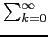

suivant: Évaluation des réels :
monter: Codage des réels et
précédent: Un exemple : codage
Table des matières
Index
- codage de 0.1 :
On a :
0.1 = 2-4*(1 + 1/2 + 1/24 +1/25 +1/28 +1/29 + ...) = 2-4*1/24*k +1/24*k+1
donc  = 1 et
m = 1/2 +
= 1 et
m = 1/2 +  1/24*k +1/24*k+1
1/24*k +1/24*k+1
On obtient le codage de 0.1 :
the code of3f (00111111), b9 (10111001), 99 (10011001), 99 (10011001),
99 (10011001), 99 (10011001), 99 (10011001), 9a (10011010),
le dernier octet est 1010 car il y a eu un arrondi les 2 derniers bits 01
sont devenus 10 car le chiffre suivant etait 1.
- codage de a:=3.1-3 :
L'exposant sera donc = - 4 (qui correspond à 2*2-5) et les bits
qui correspondent à la mantisse vont débuter à
1/2 = 2*2-6 : ainsi
les nombres de la mantisse subissent un décalage vers la gauche de 5 places
et on obtient :
3f (00111111), b9 (10111001), 99 (10011001), 99 (10011001),
99 (10011001), 99 (10011001), 99 (10011001), 9a (10100000),
On voit alors que :
a > 0.1 et que
a - 0.1 = 1/250 +1/251 (car 100000-11010=110)
Remarque
Ce qui précéde permet d'expliquer pourquoi lorsque Digits:=15 :
floor(1/(3.1-3)) renvoie 9 et non 10.
suivant: Évaluation des réels :
monter: Codage des réels et
précédent: Un exemple : codage
Table des matières
Index
Documentation de giac écrite par Renée De Graeve